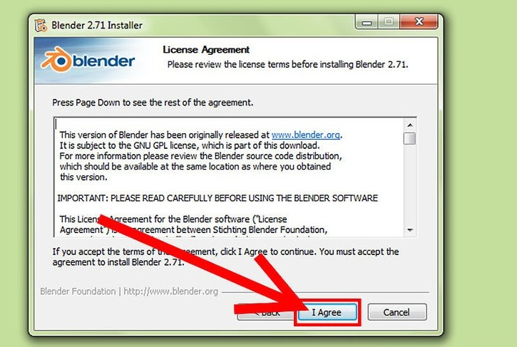
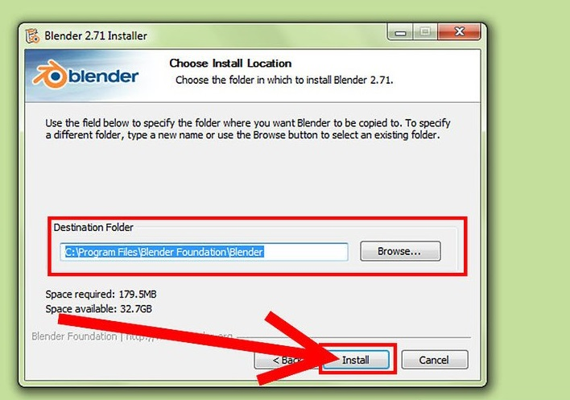
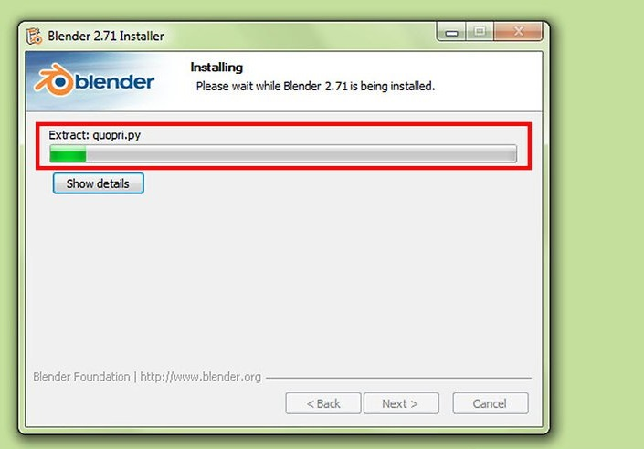
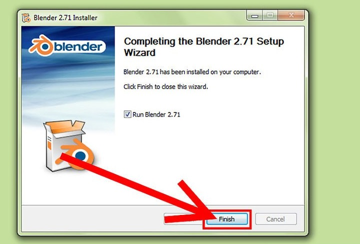
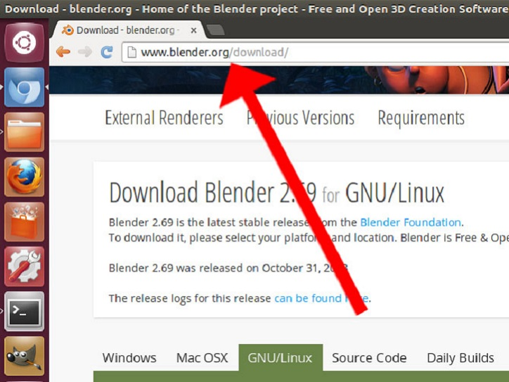
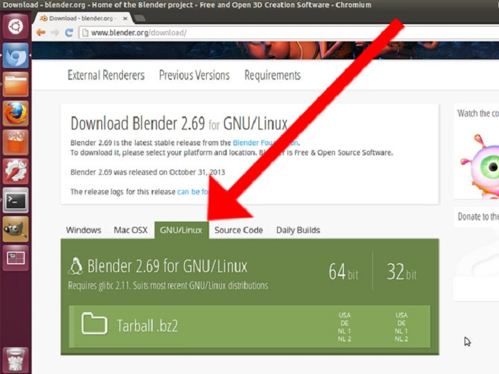
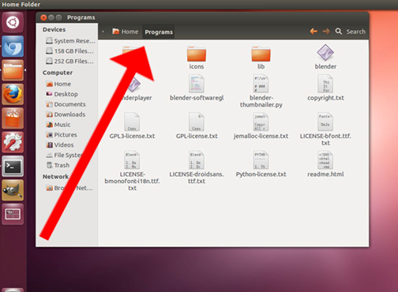
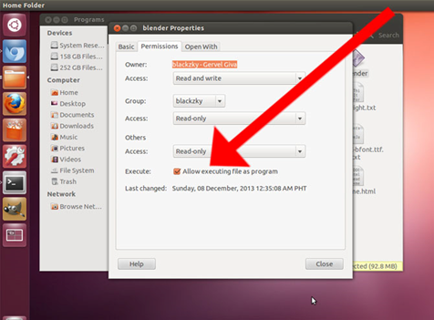
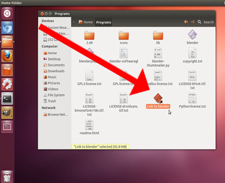
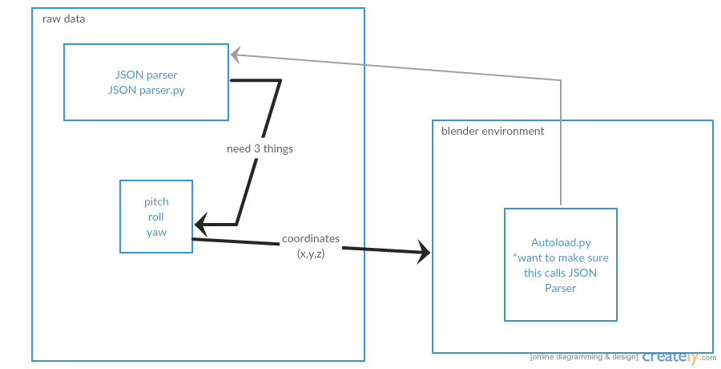

Documentation
Motion fun is an affordable open source solution to tracking motion and orientation. Motion fun is an implementation of interpreting real space into a graphical representation. Current motion capturing technology is expensive and out of reach for most people including students. For example, a two-camera Vicon system with one software license is US$12,500 and MotionBuilder to map the capture data of a character, runs about $4,200 per user. Having access to motion capture technology will facilitate learning for students pursuing degrees in cinema, biology, robotics, kinesiology, physical therapy and many more disciplines. Our application is able to move rendered 3D objects inside blender. It is an add-on that utilizes a Raspberry PI to capture motion and orientation. Our goal is to make motion capture technology affordable for students and the general public.
Equipment:
- Raspberry Pi
- Pi Breakout Cobbler
- 8Gb SD card
- Wireless dongl
- Adafruit 9DOF BNO055 Sensor
- 10 Jumper Wires
- Soldering Iron s/solder
Software Dependence:
- Rasbian Jessie Linux Operating System
- Python w/Flask
- SSH & FTP not really software but make sure your linux disc can do both protocols
- Putty
- Motion Fun Repository
- Blender
- A webGL enabled brower - *google chrome is fine
Blender:
Blender is a free and open source 3D creation suite. It supports the entirety of the 3D pipeline modeling, rigging, animation, simulation, rendering, compositing and motion tracking, even video editing and game creation.
Download:
Blender is a 3D animation suite that is perfect for beginners who want to try 3D modelling. This is a free and open-source software created by Blender Organization, so it means that you do not need to spend money to purchase a 3D application to try it. Like most applications, to use Blender, you first have to download and install it. Blender is available for the following operating systems:
- Windows Vista, 7, 8, 10 32-bit/64-bit
- Mac OS X 10.6+ 64-bit only
- GNU Linux 32-bit/64-bit
- FreeBSD 64-bit only https://www.blender.org/download/
Run installer it will usually be located at your download folder




GNU/Linux


Create a new folder inside your Home folder. Extract the contents of the tarball into that folder. In the screenshot above, we used the name Programs for this folder.
Make the blender file executable. You can do this by right-clicking the blender file and clicking on Properties. Then select the Permissions tab and select the Allow executing file as program option.
Create a short cut
Clone repository:
- On GitHub, navigate to the main page of the repository
- Under the repository name, click Clone or download
- In the clone with HTTPs section, click the clipboard icon to copy the clone URL for the repository
- Open git bash
- Change the current working directory to the location where you want the cloned directory to be made
- Type git clone, and then paste the URL you copied from step2
- Press enter, Your local clone will be created!!
- blender files -> autoload.py => set up fix the relative path (line 20)
- f = open("yourpath.txt", "r")
Sample Code:
Sample data is a predefine motion that is safe as a text file in datalog.txt
